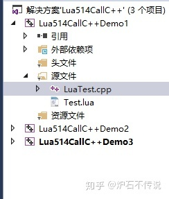
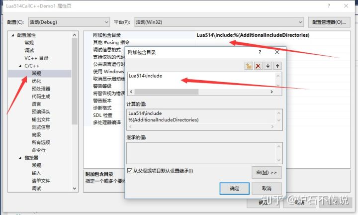
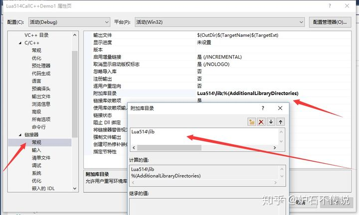
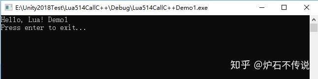

Home
题外话：这将是一个系列教程，主要是讲Lua和C++交互的内容。内容来源自2019下半年自己给自己制定的学习计划内容。2019年也即将结束，所有把这半年的学习情况整理一下发出来，与那些想学习Lua和C++交互的同学共勉。（其实也是为了方便自己以后查阅）
一、环境准备
从Lua5.1.4开始官方给出的文件只有源代码和makefile文件了，官网给出的bulid方式也是在类linux平台，如果只是想找个库使用下可以到这里来下载：http://joedf.ahkscript.org/LuaBuilds ，如果需要自定修改库配置的话，就需要自己编译。关于编译Windows版本的教程网上也有很多，如果我有时间，后续也会写一篇编译教程。
附录
1、Lua5.1.4 for Windows之前的下载地址：http://files.luaforge.net/releases/luaforwindows/luaforwindows
2、源码的下载地址：https://www.lua.org/ftp/#source
二、开发环境
1、我使用的是vs2017写的测试用例，首先建立一个空的C++控制台应用程序，然后在里面创建一个LuaTest.cpp文件和一个Test.lua文件，目录结构如下：
2、添加项目包含目录和依赖项。我是把安装的Lua文件直接拷贝到新建的项目工程内的，这样做的好处，是方便把测试工程给大家，不需要安装Lua，工程就可以直接运行。
三、代码
1、在Test.lua文件内添加如下代码：
print "Hello, Lua! Demo1"
2、在LuaTest.cpp文件内添加如下代码：
#include <stdio.h>
extern "C" {
#include "lua.h"
#include "lualib.h"
#include "lauxlib.h"
}
lua_State* L;
int main(int argc, char *argv[])
{
L = lua_open();
luaL_openlibs(L);
luaL_dofile(L, "Test.lua");
lua_close(L);
printf("Press enter to exit...");
getchar();
return 0;
}
四、测试
如果一切顺利，此时你按下F5,应该会弹窗如下窗口，说明你环境搭建成功了。后续我也会把整个系列文章的测试工程地址发给大家。
今天周末，刚好有时间，就把项目测试工程的源码整理了一下放到了Github上面了，地址如下，有需要的自取：hong672850430/Lua514CallCPlusPlus